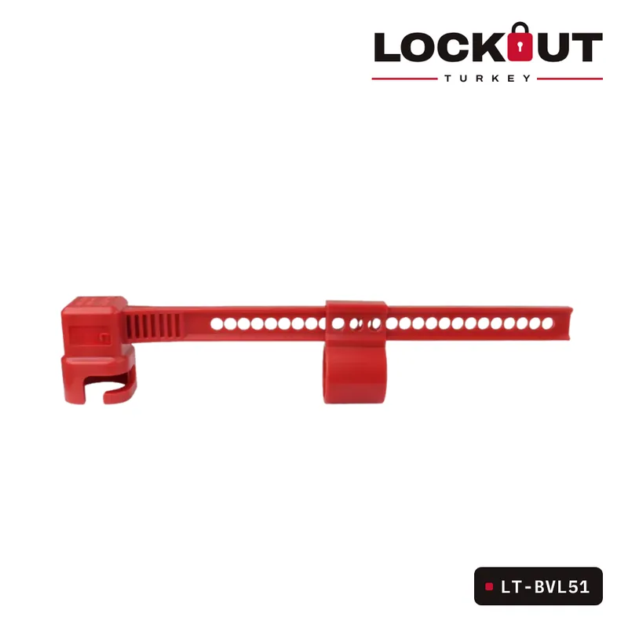
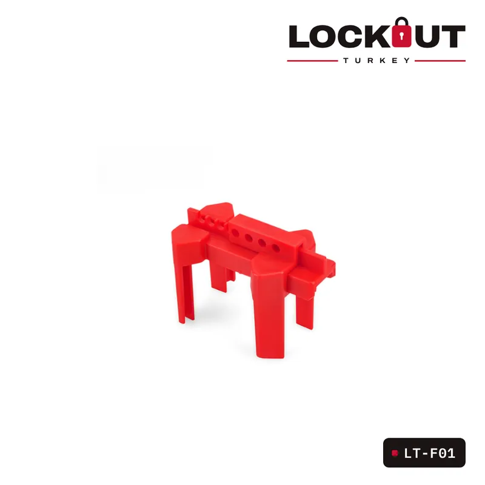
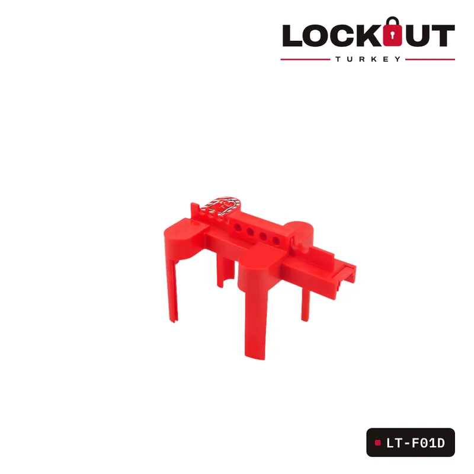

LT-F05A
Ayarlanabilir Küresel Vana Kilitleme Ekipmanı
LT-F05A Ayarlanabilir Küresel Vana Kilitleme Ekipmanı – DN8-DN50 çapındaki küresel vanalar için uygundur.
OSHA uyumlu LOTOÖzelleştirilebilirÜrün seçim desteği
Kategori: Vana Kilitleme Ekipmanları
LT-F05A Ayarlanabilir Küresel Vana Kilitleme Ekipmanı, iş güvenliği ve kilitleme/etiketleme (LOTO) prosedürlerine uygun olarak tasarlanmıştır. Farklı tipteki küresel vanalara uyum sağlayan esnek ve güvenilir bir kilitleme çözümü sunar.
- Geniş Uyumluluk: DN8 - DN50 çapındaki küresel vanalar için uygundur.
- Ayarlanabilir Tasarım: 1/2 inç (13 mm) - 2 3/4 inç (70 mm) vana saplarına uyumludur.
- Yardımcı Arka Dişli Parçalar: Yükseltilmiş ve uzatılmış küresel vana kollarını güvenli şekilde kilitlemek için ek destek sağlar.
- Kolay Kullanım: Genişlik sola ve sağa ayarlanabilir, farklı tipte küresel vanalara uyum sağlar.
- Kazara Açılmaya Karşı Koruma: Manuel çeyrek tur küresel vana kollarına uyumludur ve yetkisiz açılmayı önler.
| Ürün kodu | LT-F05A |
|---|---|
| Kategori | Vana Kilitleme Ekipmanları |
| Malzeme | Dayanıklı mühendislik plastiği |
| Uyumlu Vana Çapları | DN8 - DN50 |
| Sap Genişliği Uyum Aralığı | 13 mm - 70 mm |
| Kullanım Alanı | Küresel vanalar ve iş güvenliği gerektiren endüstriyel tesisler |
- 1 × LT-F05A Ayarlanabilir Küresel Vana Kilitleme Ekipmanı
Vana Kilitleme Ekipmanları
Tümünü görBenzer ürünler


